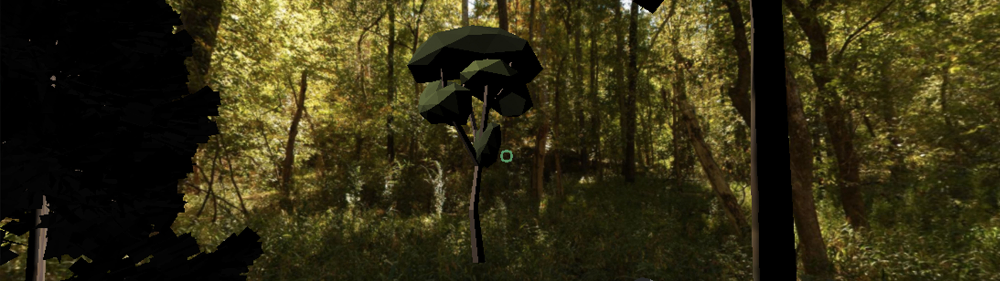

Virtual Reality Forest
October 2016

Overview
This virtual reality forest was an individual class project, inspired by speculative futures and alternate realities. I decided to create an experience in which the residents of Atlanta could go back in time and see what the area was like before modern development. It focuses mainly on education about the original vegetation and wildlife, with a real location component to see the different scenes.
There are 2 scenes that users can find - a forest meadow and a creek. The forest meadow is located at the busy intersection of North Avenue and Techwood Drive, to constrast with the peaceful and calming forest ambience. The creek is located at the intersection of Penn and Ponce, which is the historic location of a now non-existant branch of Clear Creek. The 3D tree models can be tapped for information about the forest.
The project website can be found hosted on GitHub Pages. For users who wish to see the scenes without walking to the physical coordinates, I have created a debugging version which allows travel via clicking on colored spheres. It works for Android and iPhone (although automatic audio playing may not work on iPhone), in any web browser. This was created using A-Frame, Javascript, and HTML.
Project Details
Individual school project
My roles:
Brainstorming, Research, Web-App Development, Debugging, User TestingContext
.......... ......... .. .. ...................... ....... .. .. .......... ............
{kind=link}
{kind=link}
{kind=link}
{kind=link}
{kind=link}
{kind=link}
{kind=link}
{kind=link}
{kind=link}
{kind=link}
{kind=link}
Challenges
Designing for a foreign city & culture
My largest challenge for this project was practicing design for a foreign audience. Assumptions I had about how certain features may work were not necessarily true in Denmark, and even if they were, that did not mean they were necessarily true for Copenhagen. I had to be mindful and fact-check my designs harder than ever before by consulting more users and collaborating with my Danish group members at each step in the process.
Additionally, I relied on my group mates for translation. We worked together in English, collaborating on designs and phrasing of surveys and interview questions. They then translated and conducted interviews in Danish, a decision made for the comfort of the participants to encourage easy information sharing, then translated responses back into English for our group analysis process.
Organic is not carbon-neutral
The most significant hurdle we faced was an early conceptual mistake, which cost us a fair amount of time and effort. Our intial survey and qualitative street interviews mixed healthy, organic, and green businesses together. In reality, however, these are not all carbon-neutral. For example, organic products are often very carbon producing due to extra efforts to keep them organic and long shipping distances.
This was rectified in our second round of user surveys and interviews, and many of the questions from the first round were able to be used still. However, this problem still represented a significant point in Green Guide's conceptual history, and resulting in the need to redouble our efforts to ensure that users will understand the difference between organic, eco-friendly, and carbon-neutral in the final design. This was mainly achieved through interviews with prospective businesses to be featured on the app, and then highlighting in their description how they are making an effort to help the environment. We also touched on this with the Category menu and cooresponding badges.
Process
Concept
The process began with brainstorming about various ways in which we could help Copenhagen become more carbon-neutral. We eventually settled on an app that, instead of prompting users to reduce their own emissions, would place emphasis on rewarding those who are already taking steps.
Discovery
The process began with brainstorming about various ways in which we could help Copenhagen become more carbon-neutral. We eventually settled on an app that, instead of prompting users to reduce their own emissions, would place emphasis on rewarding those who are already taking steps.
Development
The poster designs originally came from an amalgamation of our previous project's posters, which was then adjusted to fit the exhibition theme and tweaked through weekly critiques. We started with 8 women, but trimmed it down to 5 by the end. More details can be found in the project's process book. Weekly design critiques were held in class, with each group giving feedback and suggestions on both the posters and digital components.
User Testing
After selecting the theme, each member of the group was assigned several activists to further research and head the poster creation for, focusing on tying the content to the our selected theme. My activists were the entrepreneur group that I had previously designed posters of - Freddye Henderson, Evelyn Frazier, and Geneva Haugabrooks.
We utilized a collection of historical Southern Bell calendars at the Auburn Avenue Research Library, general online research, and various historical databases for multimedia such as articles, photos, and videos.
Reflection
This was an incredibly educational and fun project to work on, and I feel grateful for the chance to celebrate the lives and accomplishments of such great historical leaders. The full exhibition, including 2 other student groups from our class, was titled Of Historic Note and opened on April 5th 2018 at Apex Museum. All displays during the actual exhibition were limited to the stand-alone poster series due to space constraints.